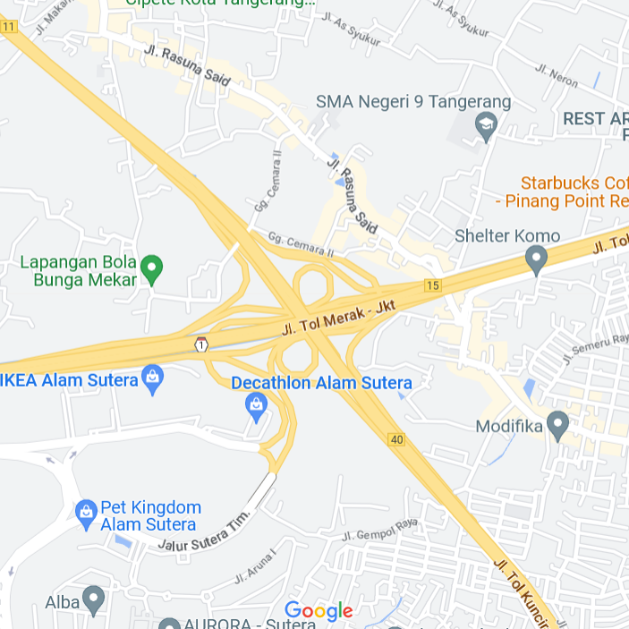

Find Us!
Come visit us at our store or deliver to your house!
Block 71
Ariobimo Sentral, South Jakarta, RT.9/RW.4,
East Kuningan, Setiabudi, Jakarta, 12950
Woodland Park Residence
Jl. Raya Kalibata No.22, RW.7, Rawajati, Kec.
Pancoran, Kota Jakarta Selatan, Daerah
Khusus Ibukota Jakarta 12750
IKEA Alam Sutera
Alam Sutera, Jl. Jalur Sutera Boulevard
No. 45, Kunciran, Kec. Pinang, Kota
Tangerang, Banten 15320
